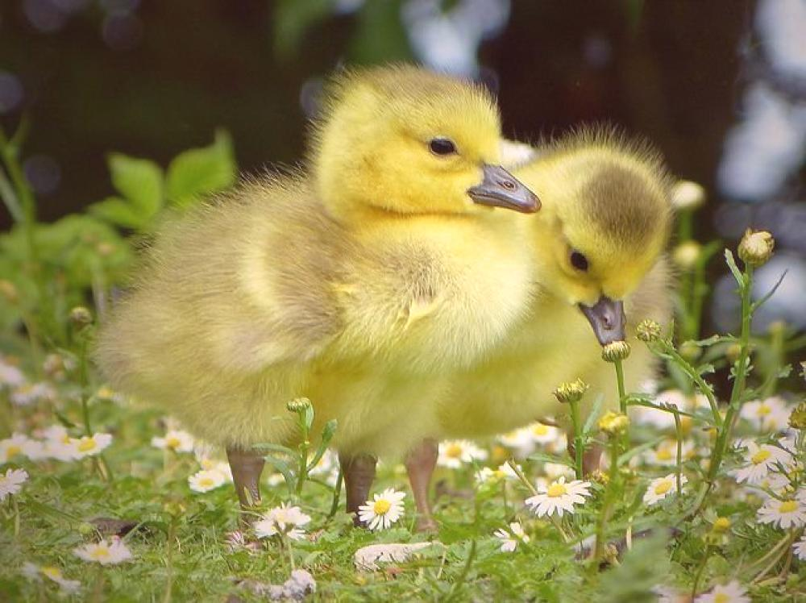
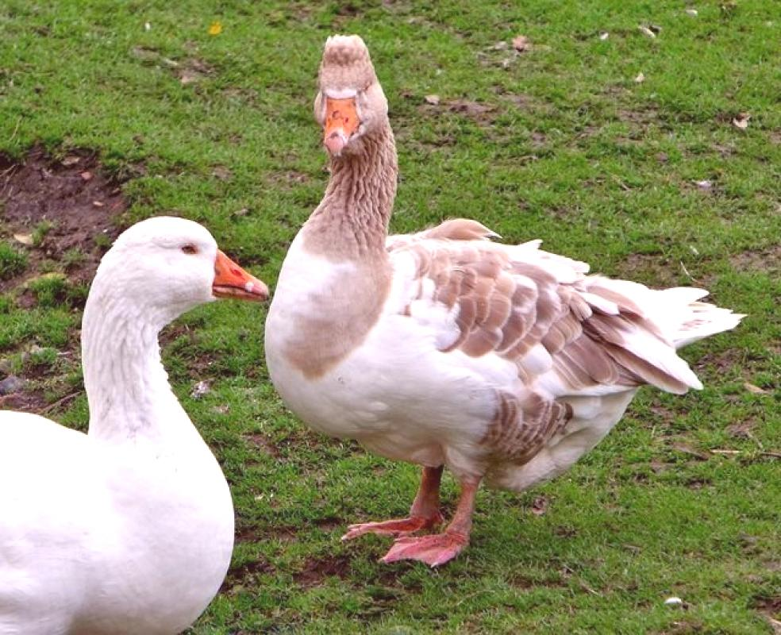

Płeć gęsi pozwala hodowcom prawidłowo tworzyć stado. Jeśli celem hodowania drobiu jest uzyskanie odżywczych jaj, gęsi kompani muszą być uformowani w proporcji przedstawicieli płci męskiej i żeńskiej wystarczającej do reprodukcji. Wtedy doceni wysoki wynik. Przy wyborze gęsi nie zaszkodzi zwrócić uwagę na ich pochodzenie. Lepiej jest uzyskać nowy wzrost od różnych hodowców, ponieważ bliskie więzi rodzinne mogą uszkodzić jakość produktów.

Gęsi dla dorosłych „to ważny ptak irozsądny ”(Mu-mu, A.S.Turgenev).Istnieje kilka znaków, aby dowiedzieć się, jak dokonać właściwego wyboru.
Gęś, z wyglądu, jest zauważalnie większa niż gęś.Waga samca wynosi nie mniej niż 6 kg, u samicy zaczyna się od 5 kg.Szyjka gąsiora jest dłuższa i ma tendencję do rozciągania się w górę, głowa jest bardziej imponująca.Cechy zewnętrzne są zmienne, tak jak są one charakterystyczne dla danej rasy.
Nie można odróżnić blaszki od gęsi rasy Linda, wydają się one odbijać.Określenie płci gęsi z danych zewnętrznych jest błędne.
Wielu doświadczonych rolników może zidentyfikować pół gęsi ze względu na jej naturę i pewne nawyki.Zbirów i wojowników można znaleźć w mężczyznach.Szczególnie aktywne wojny gusakov za posiadanie kobiety.Czasami konieczne jest podzielenie domu na oddzielne kojce.Ptaki stare i młode, zwłaszcza brzydkie, trzymane są osobno, więc nie ranią się nawzajem.przyjaciel. Cechy przywódcze dominują również u samców ptaków. Warto obserwować stado, które lider prowadzi do zbiornika. Rozpryskując się w wodzie, gandery wyciągają szyje, gęsi łuk, poziomo przesuwając szyje. Osoby częściej przykucają do ziemi, pokornie i spokojnie. Mężczyźni preferują dumną postawę, mają silne nogi.
Gęsi są znacznie większe niż gęsi
Spokojne usposobienie gęsi może zmienić się w walkę, podczas gdy pisklęta gęsie wylęgają się. Chroniąc potomstwo, ptak zapomina o jego płci i śmiało zamyka zagrożenie.
Głos gęsi wyróżnia się łuską i trąbą, głośnym krzykiem. Gęś publikuje dzwonienie, poruszając dźwięki.
Używając metody strachu, aby określić płeć piskląt, użyj ich aparatu przedsionkowego. Nogi gęsi są wiązane sznurkiem i opuszczane z opuszczoną głową. Pamiętając, że reakcja mężczyzny jest lepsza, zwróć uwagę na zachowanie. Jeśli ptak wisi obojętnie lub wytwarza chaotyczne małe ruchy, możemy założyć, że masz w rękach kobietę. Kiedy kurczęta flądrzy, próbując dotrzeć do nóg dziobem, i usilnie wyciąga się w górę, upewnij się, że jest to samiec.
„... ważne ... syk może ... porządek przynosi ... ciągnie za szyję ...”, poeta T. Borysow bardzo dokładnie opisał nawyki.
